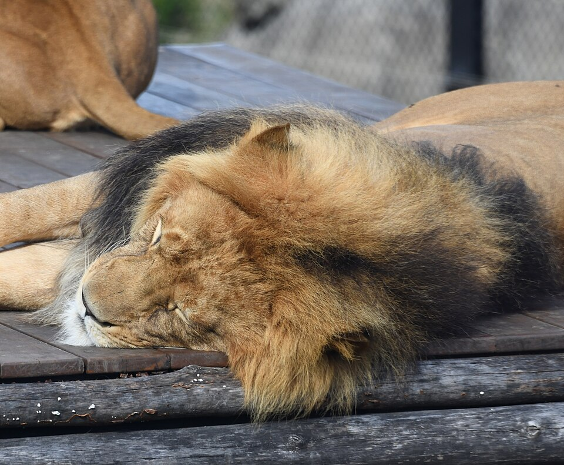
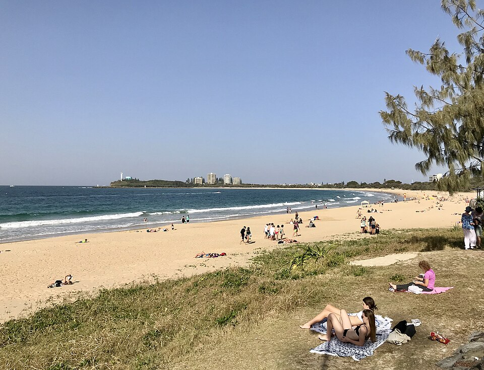
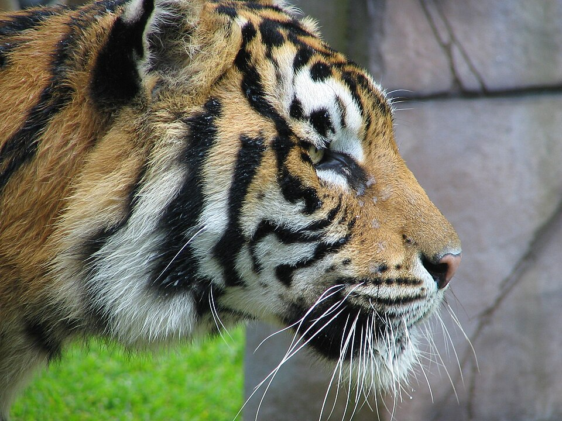
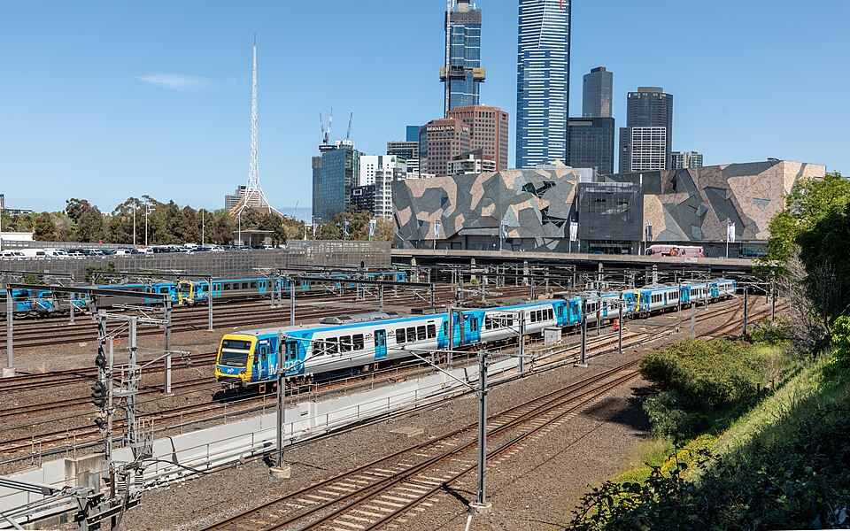
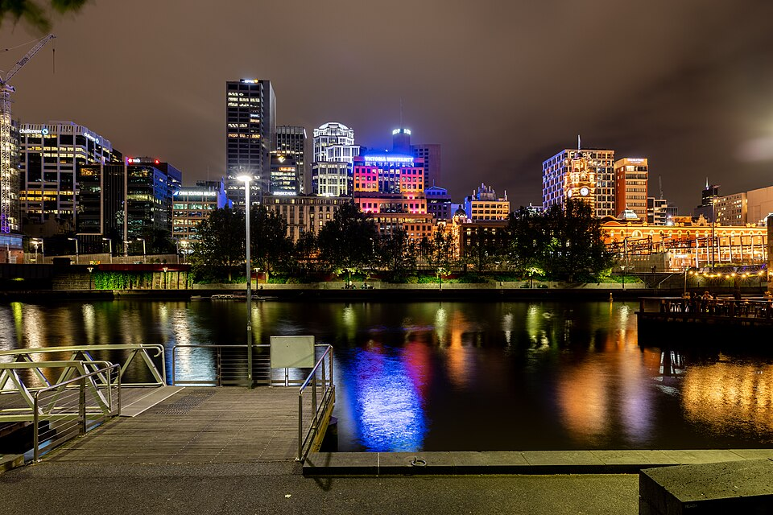
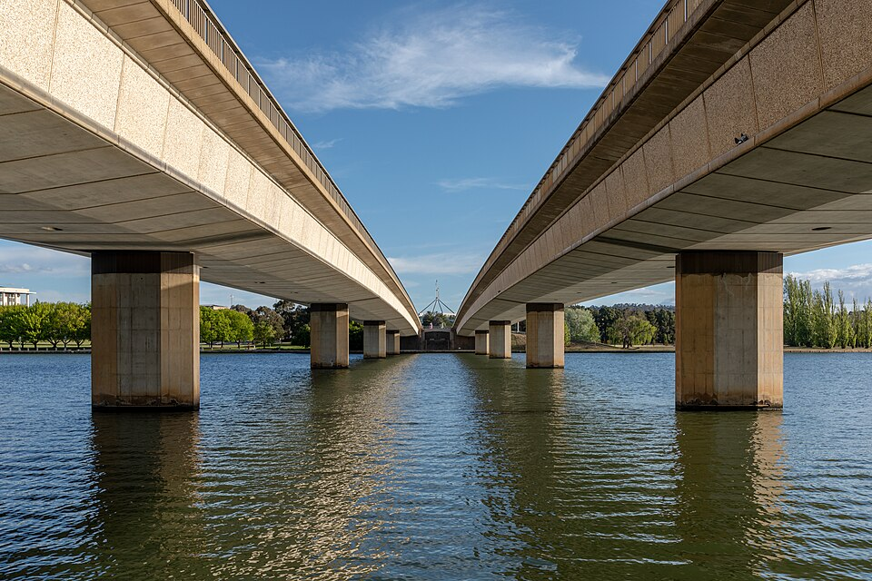
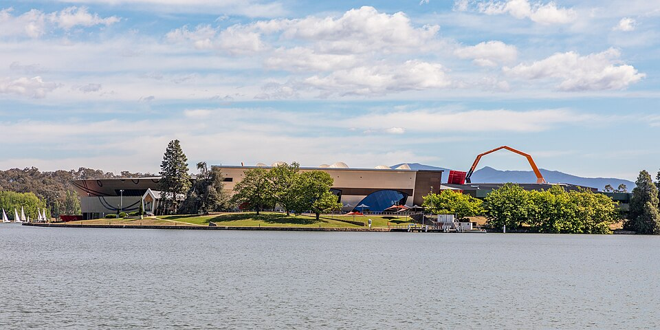
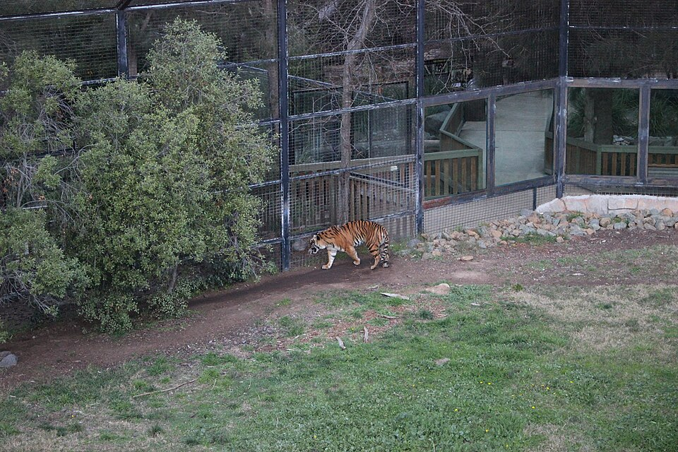

AUSTRALIA · REST · GOOD FOOD · BIG CATS
우리의 호주 신혼여행, 다섯 가지 안
해밀턴의 바다부터 호랑이 곁에서 보내는 특별한 하룻밤까지
우리에게 맞게 고르면
섬 휴양이 끌리면 시드니+해밀턴, 이동 없이 편하게 쉬려면 시드니 연박을 먼저 봐요. 호랑이를 보는 특별한 숙박이 궁금하면 자말라 1박을 비교해요.
5/22 예식 후 서울가든호텔에서 자고, 5/23 출국하는 일정은 그대로예요. 도착일은 숙소에서 쉬고, 동물원은 하루만 넣어요. 술을 많이 마시지 않으니 일반 숙소는 조식 포함 정도로 비교해요.
REFERENCE · TRIPSTORE
보내준 글을 우리 일정에 적용하면
참고: 트립스토어 · 호주 신혼여행 코스 추천 및 예약 노하우 총정리 (2026.11.09). 아래 선택과 우선순위는 두 사람의 취향에 맞춘 판단이에요.
| 글에서 비교한 여행 방식 | 우리에게 적용할 내용 |
|---|---|
| 시드니 집중 | 한 호텔 연박을 기본으로 하고, 타롱가 하루와 하버 저녁 식사를 넣어요. 블루마운틴·포트스테판은 둘 다 넣지 않고 쉬는 날을 남겨요. |
| 시드니 + 멜버른 | 카페·도시 산책 취향일 때 비교해요. 현지 5박이라 두 도시를 묶으면 이동 비중이 커져, 현재는 멜버른 단독 안을 우선해요. |
| 시드니 + 케언즈 | 산호초·스노클링을 하고 싶을 때 비교할 후보예요. 지금은 섬에서 쉬고 싶다는 취향에 맞춰 해밀턴을 먼저 봐요. |
케언즈와 해밀턴은 이렇게 달라요
케언즈는 호주 본토의 도시로 그레이트배리어리프와 열대우림 여행의 거점이에요. 해밀턴은 섬 숙박 중심의 후보예요. 바다 투어가 우선이면 케언즈, 숙소에서 쉬는 시간이 우선이면 해밀턴이라는 기준으로 비교해요. 케언즈를 넣더라도 해밀턴에 더하기보다 둘 중 한 곳을 골라요. 맹수 관람은 시드니에 배치해요.
케언즈 위치·여행 거점 정보: 호주 관광청 케언즈 안내. 두 지역 중 무엇이 더 맞는지는 우리 취향에 따른 판단이에요.
반영한 예약 비교 기준
- 도착 첫날은 쉬고, 저녁 식사는 숙소 가까운 곳으로 잡아요.
- 패키지·반자유 상품은 자유시간, 숙소 위치, 포함 투어와 추가 비용을 함께 비교해요.
- 항공·수하물·공항 이동·조식·동물원·취소 조건을 같은 기준으로 맞춰 2인 최종 총액을 비교해요.
글의 상품 표시가는 출발일·인원·포함 항목이 다른 참고 금액이에요. 우리 2027.5.23 출발 견적으로 사용하지 않았고, 현재 예산표도 견적 전 계획 금액이에요.
5가지 안 한눈에 비교
| 일정안 | 숙박 구성 | 2인 계획 예산 | 잘 맞는 취향 |
|---|---|---|---|
| 1. 시드니 + 해밀턴 아일랜드 | 해밀턴 3 + 시드니 2 | 약 1,150만원 | 섬 휴양을 원하면 · 취향 1순위 |
| 2. 시드니 한 곳에서 5박 | 시드니 5박 연박 | 약 850만원 | 이동 부담 최소 · 가장 편한 기본안 |
| 3. 선샤인코스트 · 물룰라바 5박 | 물룰라바 5박 연박 | 약 900만원 | 바닷가 연박 + 호랑이 하루 |
| 4. 멜버른 한 곳에서 5박 | 멜버른 5박 연박 | 약 880만원 | 카페·음식 + 사자·호랑이 |
| 5. 시드니 + 캔버라 · 자말라 특별한 1박 | 시드니 3 + 캔버라 1 + 자말라 1 | 약 1,170만원 | 맹수 좋아하면 · 특별한 숙박 |
모든 총액은 2인 합계의 계획용 배분이며 실시간 항공·호텔 견적이 아니에요. 1,500만원을 다 쓰지 않아도 돼요. 예약 확정 여부는 별도예요.
PLAN 01 · 섬 휴양을 원하면 · 취향 1순위
1. 시드니 + 해밀턴 아일랜드
해밀턴 3박 + 시드니 2박. 섬에서 먼저 쉬고, 마지막에 호랑이·사자를 봐요.


사진 출처·이용조건
사진: Slug69
원문 · CC BY-SA 2.0

사진 출처·이용조건
사진: Sardaka
원문 · CC BY-SA 4.0

사진 출처·이용조건
사진: Sardaka
원문 · CC BY-SA 4.0
실제 장소에서 촬영된 참고 사진이에요. 촬영 시기·날씨·동물의 위치는 여행 때와 다를 수 있어요. 사진을 누르면 크게 볼 수 있어요.
어디에서 쉬어요?
해밀턴은 Beach Club을 먼저 비교하고 Reef View Hotel을 함께 봐요. 시드니는 서큘러키·더 록스 주변 호텔 2박으로 잡아요. 해밀턴 숙소는 객실당 1박 80만원 × 3박, 시드니는 50만원 × 2박을 배분했어요. 실제 판매가가 아닌 목표 금액이에요.
맹수 관람 하루
타롱가 동물원의 Tiger Trek와 African Savannah에서 호랑이·사자를 보는 하루를 넣어요. 해밀턴 섬 자체에서 맹수를 보는 일정은 아니에요.
날짜별 느슨한 일정
| 날짜 | 할 일 |
|---|---|
| 5/23 (일) | 서울가든호텔 체크아웃 · 한국 출국 · 기내박 |
| 5/24 (월) | 시드니 도착 → 해밀턴 국내선 연결 · 체크인 후 쉬기 |
| 5/25 (화) | 늦잠 · 수영장 · 캣츠아이 비치 산책 · 저녁 식사 |
| 5/26 (수) | 화이트헤이븐 반일 투어 선택 · 피곤하면 섬에서 계속 쉬기 |
| 5/27 (목) | 해밀턴 → 시드니 · 호텔 체크인 · 하버 저녁 산책 |
| 5/28 (금) | 타롱가 동물원 · 호랑이와 사자 중심으로 관람 · 좋은 저녁 |
| 5/29 (토) | 체크아웃 · 카페 · 한국행 출국 (5/30 도착 연결편 가정) |
| 5/30 (일) | 한국 입국 |
5월 말 분위기: 열대 섬 휴양 분위기를 가장 잘 느낄 후보예요. 5월 말 바람·구름·수온에 따라 물놀이는 달라져요. 온수 수영장 여부를 객실 예약 때 확인해요.
확인 출처: 해밀턴 공항·연결 도시 · 해밀턴 숙소 안내 · 타롱가 호랑이·사자 전시
PLAN 02 · 이동 부담 최소 · 가장 편한 기본안
2. 시드니 한 곳에서 5박
한 호텔에서 쉬면서 외식하고 동물원은 하루만 가요. 도시 맛집과 편리함을 우선할 때 좋아요.


사진 출처·이용조건
사진: Ank Kumar
원문 · CC BY-SA 4.0
사진 출처·이용조건
사진: Sardaka
원문 · CC BY-SA 4.0
사진 출처·이용조건
사진: Sardaka
원문 · CC BY-SA 4.0
실제 장소에서 촬영된 참고 사진이에요. 촬영 시기·날씨·동물의 위치는 여행 때와 다를 수 있어요. 사진을 누르면 크게 볼 수 있어요.
어디에서 쉬어요?
서큘러키·더 록스·달링하버 중 한 지역 호텔을 5박 연박해요. 객실당 1박 50만원을 목표로 잡았어요. 주방이 필요하면 서비스드 아파트도 비교하되 청소비까지 포함해 봐요.
맹수 관람 하루
타롱가 동물원 하루: 호랑이와 사자 구역을 먼저 보고 나머지는 체력에 맞춰요. 동물원 뒤에 먼 관광을 붙이지 않아요.
날짜별 느슨한 일정
| 날짜 | 할 일 |
|---|---|
| 5/23 (일) | 서울가든호텔 체크아웃 · 한국 출국 · 기내박 |
| 5/24 (월) | 시드니 도착 · 짐 맡기기 · 체크인 후 낮잠 · 가까운 저녁 |
| 5/25 (화) | 늦잠 · 브런치 · 호텔 휴식 · 해 질 무렵 하버 근처 저녁 식사 |
| 5/26 (수) | 타롱가 동물원 · 호랑이·사자 관람 · 숙소 복귀 |
| 5/27 (목) | 스파 또는 호텔 휴식 · 스테이크 저녁 |
| 5/28 (금) | 본다이 해변 산책 선택 · 카페 · 기념일 저녁 |
| 5/29 (토) | 체크아웃 · 여유 있게 공항 이동 · 귀국 출발 |
| 5/30 (일) | 한국 입국 |
5월 말 분위기: 호주 관광청의 시드니 5월 평균 최고·최저는 약 20℃·11℃예요. 산책은 좋지만 해수욕보다 호텔·카페 중심으로 생각해요.
확인 출처: 타롱가 전시·동선 · 호주 관광청 도시별 날씨
PLAN 03 · 바닷가 연박 + 호랑이 하루
3. 선샤인코스트 · 물룰라바 5박
브리즈번 공항에서 해변 숙소로 이동해 한 곳에서 쉬어요. 해밀턴 국내선 대신 육상 이동을 택하는 안이에요.

사진 출처·이용조건
사진: Kgbo
원문 · CC BY-SA 4.0


사진 출처·이용조건
사진: Kgbo
원문 · CC BY-SA 4.0


사진 출처·이용조건
사진: Sheba_Also 43,000 photos
원문 · CC BY-SA 2.0
실제 장소에서 촬영된 참고 사진이에요. 촬영 시기·날씨·동물의 위치는 여행 때와 다를 수 있어요. 사진을 누르면 크게 볼 수 있어요.
어디에서 쉬어요?
물룰라바 해변 근처 호텔·주방 있는 아파트를 5박 연박해요. 객실당 1박 50만원을 배분했어요. 아파트는 조식 포함 여부와 체크인 방식, 리조트는 온수풀·스파를 비교해요.
맹수 관람 하루
Beerwah의 Australia Zoo를 하루 방문해 Tiger Temple을 봐요. 현재 공식 안내에 Tigers LIVE!가 있어요. 사자 관람을 약속하는 일정은 아니며 호랑이에 초점을 맞춰요.
날짜별 느슨한 일정
| 날짜 | 할 일 |
|---|---|
| 5/23 (일) | 서울가든호텔 체크아웃 · 한국 출국 · 기내박 |
| 5/24 (월) | 브리즈번 도착 → 물룰라바 숙소 이동 · 쉬기 |
| 5/25 (화) | 해변 산책 · 브런치 · 수영장 또는 스파 |
| 5/26 (수) | Australia Zoo · 호랑이 중심 관람 · 숙소 복귀 |
| 5/27 (목) | 늦잠 · 숙소 휴식 · 해산물 저녁 |
| 5/28 (금) | 해변 카페 · 쇼핑 조금 · 나머지는 자유시간 |
| 5/29 (토) | 브리즈번 공항 이동 · 5/30 도착 귀국편으로 출발 |
| 5/30 (일) | 한국 입국 |
5월 말 분위기: 해변 산책·숙소 휴식에 초점을 맞춰요. 5월 말 물놀이 만족도는 수온과 숙소 온수풀에 따라 달라져요.
확인 출처: 동물원 위치·교통 · 호랑이 프로그램 공식 안내
PLAN 04 · 카페·음식 + 사자·호랑이
4. 멜버른 한 곳에서 5박
도심 호텔에서 쉬고 카페와 식사를 즐겨요. 수영장 휴양보다 먹고 산책하는 여행을 원할 때 골라요.

사진 출처·이용조건
사진: Dietmar Rabich
원문 · CC BY-SA 4.0

사진 출처·이용조건
사진: Dietmar Rabich
원문 · CC BY-SA 4.0

사진 출처·이용조건
사진: Dietmar Rabich
원문 · CC BY-SA 4.0

사진 출처·이용조건
사진: Nichollas Harrison
원문 · CC BY-SA 3.0

실제 장소에서 촬영된 참고 사진이에요. 촬영 시기·날씨·동물의 위치는 여행 때와 다를 수 있어요. 사진을 누르면 크게 볼 수 있어요.
어디에서 쉬어요?
CBD·사우스뱅크 호텔 또는 서비스드 아파트 5박, 객실당 1박 50만원을 배분했어요. 실내 수영장·스파가 있는 호텔이면 쌀쌀한 날에도 쉬기 좋아요.
맹수 관람 하루
Melbourne Zoo 하루에 수마트라호랑이·아프리카사자·설표를 우선해요. 공식 Lion Gorge 안내에서 이 맹수들을 확인했어요. 별도 유료 체험을 예약하지 않아도 되는 일반 관람을 기준으로 잡았어요.
날짜별 느슨한 일정
| 날짜 | 할 일 |
|---|---|
| 5/23 (일) | 서울가든호텔 체크아웃 · 한국 출국 · 기내박 |
| 5/24 (월) | 멜버른 도착 · 호텔 체크인 · 휴식 |
| 5/25 (화) | 늦잠 · 브런치 · 야라강 산책 · 호텔 |
| 5/26 (수) | Melbourne Zoo · 호랑이·사자·설표 중심 관람 |
| 5/27 (목) | 시장·카페 중 한 곳만 · 스테이크 저녁 |
| 5/28 (금) | 호텔 스파 또는 실내풀 · 기념일 저녁 |
| 5/29 (토) | 체크아웃 · 귀국 이동 (필요하면 경유편) |
| 5/30 (일) | 한국 입국 |
5월 말 분위기: 멜버른은 5월 말 쌀쌀하고 날씨가 자주 바뀔 수 있어요. 실내 휴식·카페 중심으로 잡고 겉옷을 챙겨요.
확인 출처: 멜버른 동물원 맹수 안내 · 빅토리아 관광청 계절 안내
PLAN 05 · 맹수 좋아하면 · 특별한 숙박
5. 시드니 + 캔버라 · 자말라 특별한 1박
시드니 3박 + 캔버라 호텔 1박 + Jamala Wildlife Lodge 1박. 동물원 하루를 숙박 경험으로 바꿔요.

사진 출처·이용조건
사진: JJ Harrison (jjharrison89@facebook.com)
원문 · CC BY-SA 3.0

사진 출처·이용조건
사진: Dietmar Rabich
원문 · CC BY-SA 4.0

사진 출처·이용조건
사진: Dietmar Rabich
원문 · CC BY-SA 4.0

사진 출처·이용조건
사진: Mitch Ames
원문 · CC BY-SA 4.0

사진 출처·이용조건
사진: Grahamec
원문 · CC BY-SA 4.0
실제 장소에서 촬영된 참고 사진이에요. 촬영 시기·날씨·동물의 위치는 여행 때와 다를 수 있어요. 사진을 누르면 크게 볼 수 있어요.
어디에서 쉬어요?
시드니 3박·캔버라 일반 호텔 1박은 각 40만원, 자말라 1박은 약 330만원을 배분했어요. 자말라 Tiger Jungle Bungalow 평일 공식 요금 A$3,295/객실(1~2명)이 기준이며 1 AUD=1,000원이라는 계산 가정을 썼어요. 실제 환율·예약 가격과는 달라요.
맹수 관람 하루
National Zoo & Aquarium에 사자·수마트라호랑이가 있어요. 자말라는 투어와 동물원 숙박을 묶는 방식이에요. Tiger 객실은 동물 구역을 마주하는 객실 유형을 지정해 예약해야 하며 동물이 늘 창 앞에 있는 것은 아니에요.
날짜별 느슨한 일정
| 날짜 | 할 일 |
|---|---|
| 5/23 (일) | 서울가든호텔 체크아웃 · 한국 출국 · 기내박 |
| 5/24 (월) | 시드니 도착 · 호텔 체크인 · 푹 쉬기 |
| 5/25 (화) | 늦잠 · 브런치 · 하버 산책 · 좋은 저녁 |
| 5/26 (수) | 시드니 → 캔버라 이동 · 일반 호텔 1박 · 호수 산책 선택 |
| 5/27 (목) | 자말라 체크인 · 포함 투어 · 저녁 · 특별한 숙박 |
| 5/28 (금) | 자말라 아침·포함 일정 후 시드니 이동 · 마지막 호텔 |
| 5/29 (토) | 체크아웃 · 한국행 출국 (5/30 도착 연결편 가정) |
| 5/30 (일) | 한국 입국 |
5월 말 분위기: 캔버라는 해안보다 밤이 쌀쌀한 늦가을이에요. 바다 휴양보다는 실내 숙박과 동물 관람을 즐기는 안이에요.
확인 출처: 내셔널 동물원 동물 목록 · 자말라 포함 일정 · 2026·2027 자말라 공식 요금표
FOOD FOR EVERY PLAN
음식은 공통으로 이렇게 먹어요
브런치·해산물·스테이크·다양한 아시아 음식 중 좋아하는 메뉴를 골라요. 술 없이도 식사를 즐길 선택지는 많아요. 휴양 숙소에서는 식당 선택 폭과 외식 교통비를 같이 비교해요.
| 메뉴 | 먹는 방법 | 1인 계획 금액 · AUD |
|---|---|---|
| 브런치 + 커피 | 에그 베네딕트·아보카도 토스트·팬케이크 | A$30~45 |
| 가벼운 점심 | 피시앤칩스·버거·베트남 쌀국수·누들 | A$20~35 |
| 스테이크 저녁 | 고기 + 사이드 한두 개를 나눠 먹기 | A$60~100 |
| 해산물 저녁 | 굴·새우·생선 요리, 큰 플래터는 가격 확인 후 주문 | A$60~110 |
| 특별한 저녁 1회 | 코스 또는 리조트 레스토랑 · 무알코올 음료 | A$120~200 |
위 범위는 외식비를 나누기 위한 가정이며 특정 식당의 확인된 메뉴 가격이 아니에요. 1 AUD=1,000원으로 계산하면 2인 하루 A$160~220는 약 16~22만원이에요. 실제 환율·메뉴·주말 추가 요금에 따라 달라져요. 각 안의 식비에는 5박 동안의 식사·카페를 배분했어요.
확인한 메뉴 가격 예시 · 해밀턴 coca chu
공개 메뉴에서 미고렝 A$42, 해산물 XO 볶음 A$56, 300g 소고기 요리 A$76을 확인했어요. 디저트 A$23, 밥·음료는 별도라 2인 저녁은 A$140~200 정도를 배분해요. 메뉴에는 일요일 10%·공휴일 15% 추가 요금이 안내돼 있어요. 2027년 가격은 다시 확인해요.
숙소 식사 선택
- 시드니·멜버른: 호텔 조식과 카페 브런치를 섞고 저녁은 외식해요.
- 해밀턴: 조식 포함 여부를 확인하고 인기 저녁 식당은 미리 예약해요. 세 끼가 무료로 포함된다고 가정하지 않아요.
- 물룰라바: 주방 있는 아파트라면 과일·요거트·간단한 아침으로 쉬는 날을 편하게 보내요.
- 자말라: 공식 요금에 도착일 가벼운 식사·저녁·다음 날 아침과 투어가 포함돼 있어 그날 식사·투어를 중복 계산하지 않아요. 매일 세 끼를 무제한 제공하는 일반 올인클루시브와 구성은 달라요.
2인 예산을 항목별로 비교해요
단위: 만원 · 확정 견적 아님 · 숙박은 2인이 쓰는 객실 1개 기준이에요.
| 항목 | 해밀턴+시드니 | 시드니 | 물룰라바 | 멜버른 | 시드니+자말라 |
|---|---|---|---|---|---|
| 국제선 왕복 2인 | 360 | 340 | 340 | 360 | 340 |
| 호주 국내선 2인 | 100 | 0 | 0 | 0 | 80 |
| 숙소 5박 | 340 | 250 | 250 | 250 | 490 |
| 식사·카페 | 120 | 110 | 110 | 120 | 85 |
| 공항·현지 이동 | 50 | 45 | 85 | 45 | 55 |
| 동물원·선택 투어 | 50 | 25 | 35 | 25 | 20 |
| 예비비·보험·통신 등 | 130 | 80 | 80 | 80 | 100 |
| 2인 총액 | 1,150 | 850 | 900 | 880 | 1,170 |
에어비앤비·아파트는 청소비·서비스비까지 더한 최종 총액으로 비교해요. 1박을 늘리면 숙박·식비도 추가해요. 항공·호텔 견적이 예산을 넘으면 객실 등급부터 조정해요.
자말라의 확인된 공식 가격과 계산
2026·2027 공식 요금표의 일~목요일 객실당 1~2인 1박 기준: Lemur Room A$1,795, Tiger를 포함한 Jungle Bungalows A$3,295, Lion Pride Jungle Bungalow A$3,795예요. 계산용 환율 1,000원을 적용하면 약 180만·330만·380만원이에요. 금·토는 더 비싸고 객실 유형마다 이용 경험이 달라요. 5/27은 목요일이지만 실제 객실 가능 여부와 최종 금액은 예약 확인이 필요해요.
먼저 정하면 되는 세 가지
- 섬 휴양 vs 연박: 해밀턴의 이동을 감수할지, 시드니 한 곳에 있을지 골라요.
- 항공편: 5/30 한국 입국부터 맞추고 실제 현지 숙박 수를 확정해요.
- 방과 동물원: 해밀턴 객실·자말라 희망 객실, 동물원의 희망 동물 전시 여부를 확인해요.
조사 기준 2026.11.22. 동물원은 관람 기준이며 동물 접촉·동반 촬영을 포함한 예약이 아니에요. 일별 동물 전시와 프로그램은 달라질 수 있어요.